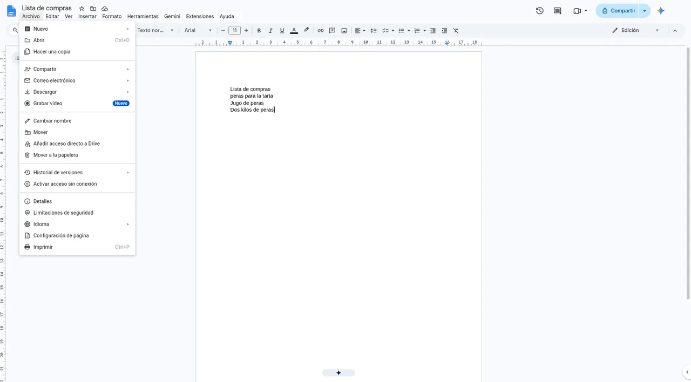
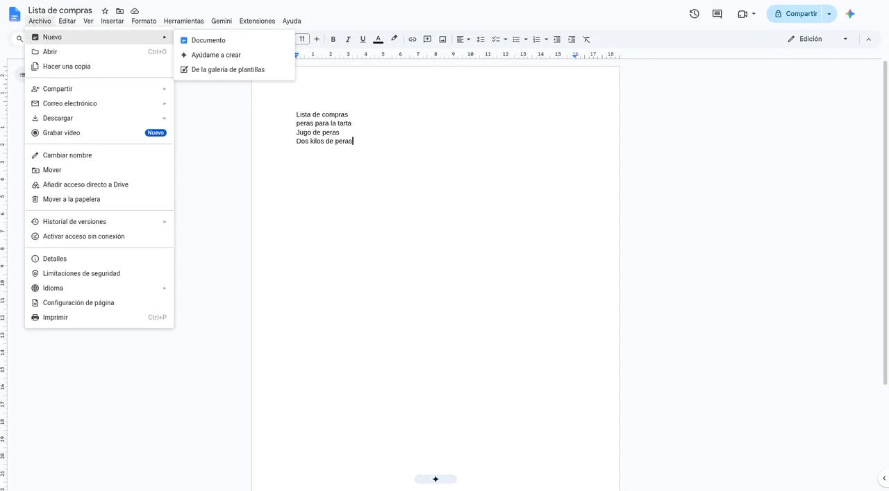
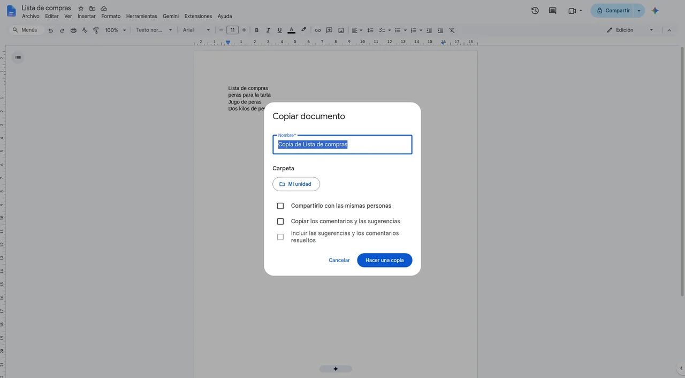
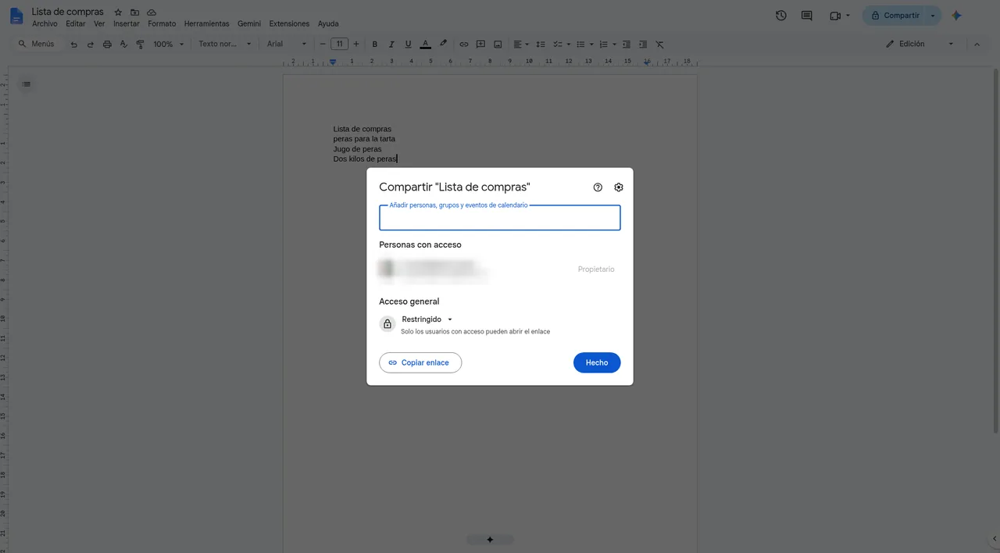
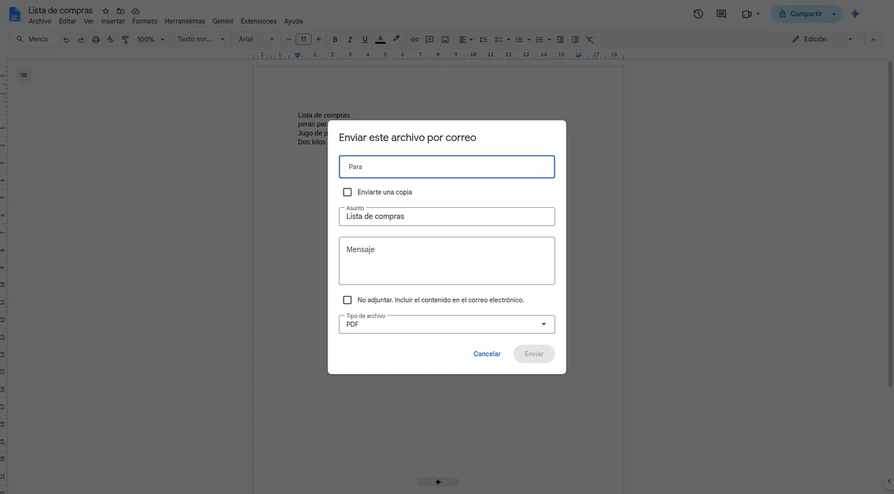
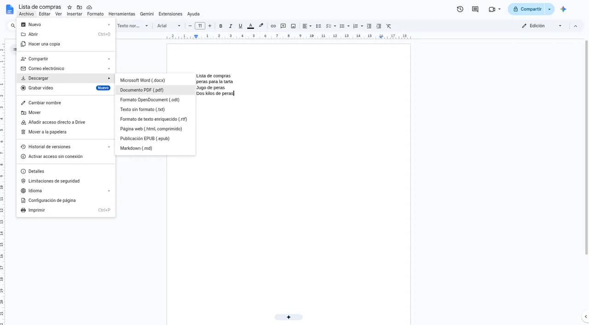
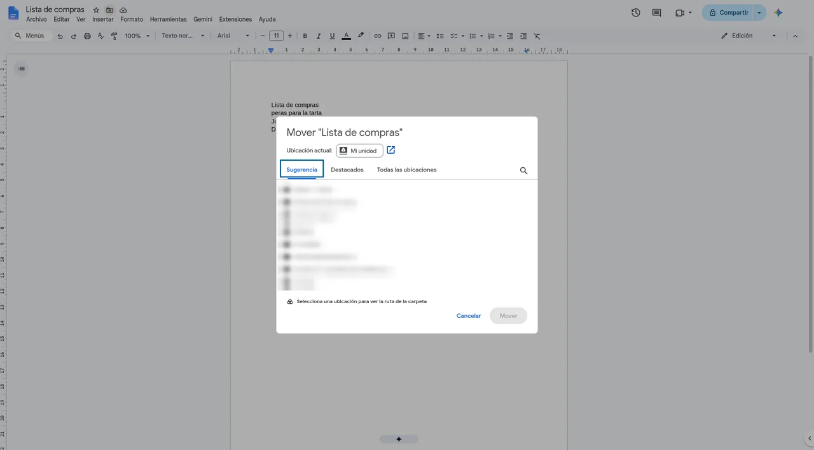
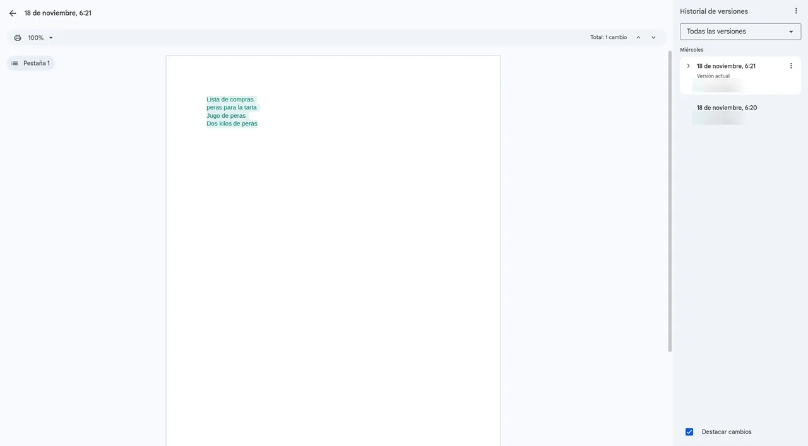
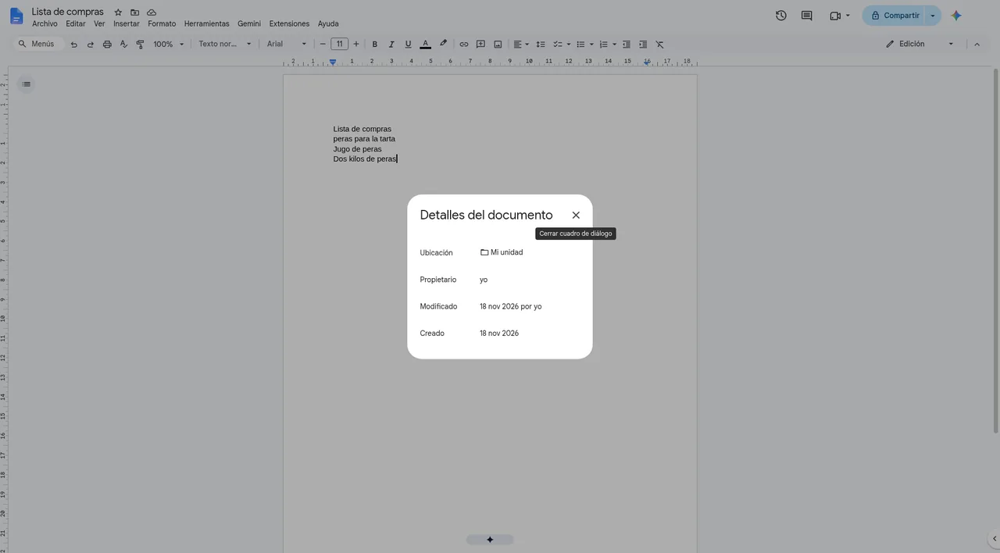
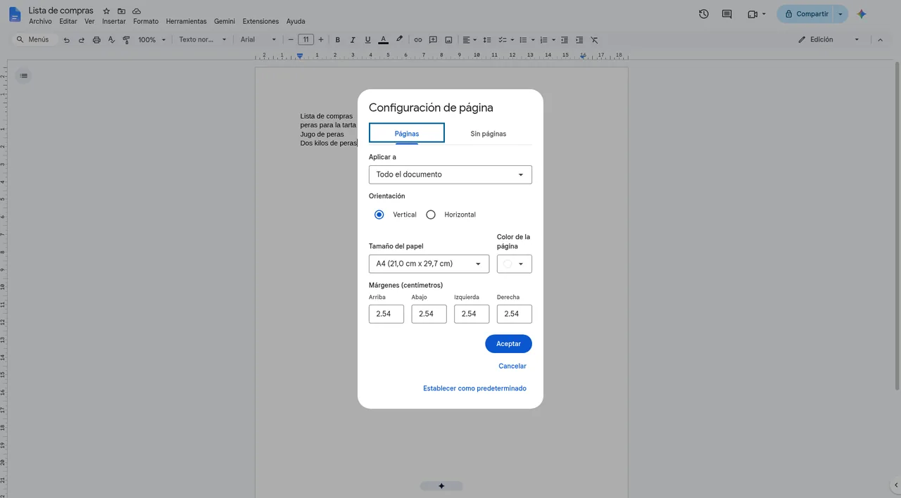

Curso de Google Documentos › Menú Archivo
Video largo · Menú Archivo
Google Docs: menú Archivo paso a paso (tutorial completo)
Fecha del video: · Programado
Mirá el video completo
Estreno del video: 21/11/2026 · 17:00 (hora Argentina)
¿Conocés todo lo que hay en el menú Archivo de Google Docs? Este video de 4 minutos lo recorre completo, opción por opción, con capturas reales de un documento de ejemplo («Lista de compras»). Abajo tenés cada parte resumida, con su captura.
Capítulos: 00:00 Introducción: dónde está el menú Archivo · 00:17 Nuevo, Abrir y Hacer una copia · 01:06 Compartir y Correo electrónico · 01:58 Descargar y Grabar vídeo · 02:22 Organizar: Cambiar nombre, Mover, Acceso directo y Papelera · 02:49 Historial de versiones y Acceso sin conexión · 03:17 Detalles, Limitaciones de seguridad e Idioma · 03:37 Configuración de página, Imprimir y cierre.
1. Dónde está el menú Archivo
Abrí tu documento. El menú Archivo está arriba a la izquierda, debajo del nombre. Hacé clic y se despliega toda la lista: desde Nuevo hasta Imprimir.

2. Nuevo, Abrir y Hacer una copia
Archivo → Nuevo crea otro archivo sin salir del que estás usando: Documento abre uno en blanco, Ayúdame a crear te deja describir lo que necesitás para que Gemini arme un primer borrador, y De la galería de plantillas abre modelos listos (cartas, currículums, informes).

Archivo → Abrir (Ctrl + O) busca cualquier archivo de tu Drive. La ventana tiene pestañas como Reciente, Mi unidad, Compartido conmigo y Subir.
Archivo → Hacer una copia duplica el documento. Elegís el nombre, la carpeta y si querés copiar los comentarios, y confirmás con «Hacer una copia».

También vimos cómo crear y nombrar un documento en la lección Cómo crear un documento en Google Docs en 3 pasos · Short.
3. Compartir y Correo electrónico
Archivo → Compartir tiene dos opciones. Compartir con otros abre la ventana para agregar personas, elegir el acceso general (en el ejemplo queda en Restringido) y copiar el enlace. Publicar en la Web crea una página pública o un código para insertar el documento; solo se publica si tocás «Publicar».

Archivo → Correo electrónico incluye Enviar este archivo por correo (lo manda como adjunto: completás Para, el asunto, el mensaje y el tipo de archivo, por ejemplo PDF) y Borrador de correo, que agrega en el documento una plantilla para redactar un mail.

4. Descargar y Grabar vídeo
Archivo → Descargar guarda una copia en tu computadora, en ocho formatos: Microsoft Word, Documento PDF, Formato OpenDocument, Texto sin formato, Formato de texto enriquecido, Página web comprimida, Publicación EPUB y Markdown. El original sigue en Drive.

El atajo más usado es Archivo → Descargar → Documento PDF (.pdf). Lo vimos paso a paso en Cómo descargar un Google Doc en PDF en 3 pasos · Short.
Archivo → Grabar vídeo te deja grabarte con la cámara y la pantalla, para explicar el documento con un video.
5. Organizar: nombre, carpeta, acceso directo y papelera
Archivo → Cambiar nombre te lleva directo al título, arriba a la izquierda, para escribir uno nuevo. Mover cambia la carpeta de Drive donde está guardado. Añadir acceso directo a Drive pone un atajo en otra carpeta, sin mover el original. Mover a la papelera manda el documento a la papelera de Drive; se puede recuperar durante 30 días.

6. Historial de versiones y acceso sin conexión
Archivo → Historial de versiones → Poner nombre a la versión actual guarda cómo está hoy el documento con un nombre. Ver historial de versiones muestra los cambios por fecha y hora; desde ahí podés volver a una versión anterior.

Archivo → Activar acceso sin conexión te deja abrir y editar el documento sin internet. Los cambios se sincronizan cuando volvés a conectarte.
7. Detalles, limitaciones de seguridad e idioma
Archivo → Detalles muestra la ubicación, el propietario y las fechas de modificación y de creación. Limitaciones de seguridad indica si el archivo tiene restricciones (en el ejemplo: «Sin limitaciones aplicadas»). Idioma cambia el idioma del documento, el que usa por ejemplo el corrector ortográfico.

8. Configuración de página e Imprimir
Archivo → Configuración de página define la orientación (vertical u horizontal), el tamaño del papel, el color de la página y los márgenes. También podés elegir Sin páginas.

Archivo → Imprimir (Ctrl + P) abre la vista previa, para imprimir o guardar como PDF.
Lo que sigue: los Shorts de cada opción del menú Archivo se publican a partir del 22/11, ya enlazados a este video largo. Después sigue el menú Editar. Mirá el calendario.
Fuentes oficiales (Ayuda de Editores de Documentos de Google):
- https://support.google.com/docs?hl=es-419
- https://support.google.com/docs/answer/7068618?hl=es-419
- https://support.google.com/docs/answer/2494822?hl=es-419
- https://support.google.com/docs/answer/49114?hl=es-419
- https://support.google.com/docs/answer/190843?hl=es-419
Capturas propias en un documento de ejemplo («Lista de compras»). El video usa voz generada con IA.